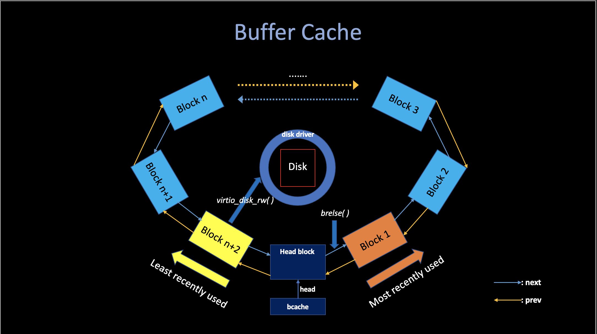
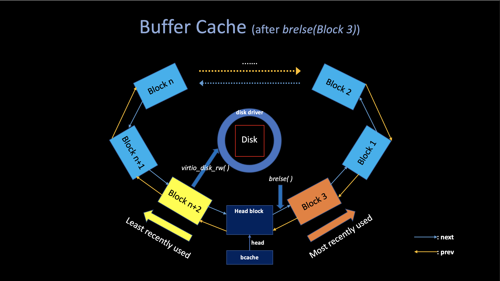

6. File System
05/20/2022 By Angold Wang
File Systems is one of the most special place in Operating System, it organize the stored data in hard disk, and maintain the persistence so that after a reboot, the data is still available.
The xv6 file system implementation is organized in seven layers, shown in the following figure.

Layer 1&2: Buffer Cache & Disk Driver
Accessing a disk is orders of magnitude slower than accessing memory, so the file system must maintain an in-memory cache of popular blocks, the buffer cache layer caches disk blocks and synchronizes access to them, making sure that only one kernel process at a time can modify the data stored in any particular block.
Layer 3: Logging
The Logging layer helps the file system to support Crash Recovery, that is, allow higher layers to wrap updates to several blocks in a transactions, and ensures that the blocks are updated atomically in the face of crashes (i.e., all of them are updated or none).
If a crash (e.g., power failure) occurs, the file system must still work correctly after restart. The risk is that a crash might interrupt a sequence of updates and leave inconsistent on-disk data structures (e.g., a block that is both used in a file and marked free).
Layer 4&5&6&7: Inode & Path
The file system needs on-disk data structures to represent the tree of named directories and files, to record the identities of the blocks that hold each file's content, and to record which areas of the disk are free.
In xv6, each file will be represented as an Inode, and the directory is a special kind of inde whose content is a sequence of directory entries. And the pathname layer provides hierachical path names like /usr/angold/xv6/fs.c, and resolves them with recursive look up. Finally, at the very top layer, the file descriptor abstracts many Unix resources (e.g., pipes, devices, files.) using the lower-layers interface we mentioned above, simplifying the lives of application programmers.
Accumulated Complexity
There are two ways to understand the file system: Bottom-up and Top-down, we call the former "OS Designer's Perspective" and the latter "Application's Programmer's perspective".
In the Top-down View, each API at the top layer (write, open, close) will be treated as serial instructions, that is: the call stack (fn1() -> fn2() ->... etc,.), which is relatively easy to figure out how does the fs works (by going through each routines), but it is very hard to understand what is the design purpose of each layer due to the accumlation of complexity at the high level. (it may also costs much time to walk through each
routines, especially in some big
systems)
In the Bottom-up View, when you start at the lowest level, the complexity is usually relatively small (code size, less routines...), and one more important thing is that the higher level usually depends on the lower level underneath, which means after you understand these low-level stuff, the upper layer code seems highly structured. (lower layers ease the design of higher ones)
In this article, we will study the xv6 File System in both Top-down and Bottom-up view in order to have a fully understanding of File System, and answer questions like: "how does file system works" and "why it looks like that (the design choice)". I believe the File System is a brilliant example to learn the "Accumulated Complexity" in System Engineering.
1. Buffer Cache
i. Disk Driver
Disk hardware traditionally presents the data on disk as a numbered sequence of 512-byte blocks (sectors).
The block size that an operating system uses for its file system maybe different than the sector size that a disk uses, but typically the block size is a multiple of the sector size.
Each block on Disk has its own unique blockno, indicating the offset of specific data in disk. (sector 0 is the first 512 bytes, sector 1 is the next, and so on...)
The file system must have a plan for where it stores specific data (i.e., indes, data) on the disk, to do so, when xv6 boots, the mkfs (kernel/mkfs.c) will build the entile file system, you should see the following output from mkfs in the make output:
nmeta 70 (boot, super, log blocks 30 inode blocks 13, bitmap blocks 25) blocks 199930 total 200000
As you can see, xv6 divides the disk into several sections, as Figure 8.2 shows. The fils system does not use block 0 (it holds the boot sector). Block 1 is called super block; it contains metadata about the file system:
- The number of data blocks
- The number of inodes
- The number of blocks in the log
- ...

The code of disk driver of xv6 is in kernel/virtio_disk.c, typically, anytime the xv6 wants to read/write the data from disk, it will call virtio_disk_rw(struct buf *b, int write), the data structure buf contains a specific buffer inside the buffer cache, where contains the target blockno.
ii. Buffer Cache
The Buffer Cache has two jobs:
- Cache popular blocks so that they don't need to be re-read from the slow disk.
- Synchronize access to disk block to ensure that only one copy of a block is in memory and that only one kernel thread at a time uses that copy.
The buffer cache has a fixed number of buffers to hold disk blocks, which means that if the file system asks for a block that is not already in the cache, the buffer cache must recycle a buffer currently holding some other block. The buffer cache recycles the least recently used (LRU) buffer for the new block.

Buffer
// kernel/buf.h
struct buf {
int valid; // has data been read from disk?
int disk; // does disk "own" buf?
uint dev;
uint blockno; // disk hardware can use blockno to find data
struct sleeplock lock;
uint refcnt;
struct buf *prev; // LRU cache list
struct buf *next;
uchar data[BSIZE]; // the stored 512 byte data
};
A buffer has two state fields associated with it:
The field refcnt indicates that how many process currently own that buffer. ( means doing some read/write on it )
The field valid indicates that the buffer contains a copy of the block., the valid is set to 1 when someone read specific disk data into block by calling bread(), and will be set to 0 if its refcnt equal to 0 and being recycled.
Lock (Prevent Multiple Access)
As we said before, one of the main purpose of buffer cache is to prevent multiple kernel thread use that copy of disk block, and this mechanism is supported by the Lock.
bget (kernel/bio.c) returns a free buffer in the buffer cache, it scans the buffer list for a buffer with the given divice and sector numbers. If there is such buffer, bget acquires the sleep-lock for the buffer to prevent multiple access (different kernel thread) and then returns the locked buffer.
If there is no cached buffer for the given sector, bget must make one by reusing a buffer that held a different sector. (LRU).
bread (kernel/bio.c) calls bget to get a locked buffer from buffer cache for the given sector, and then call virtio_disk_rw to read the data from disk.
Once bread has read the disk and returned the locked buffer to its caller, the caller has exclusive use of the buffer and can read or write the data bytes. If the caller does modify the buffer, it must call bwrite to write the changed data to disk before releasing the buffer.
Notice that there is at most one cached buffer per disk sector, to ensure that readers see writes, and because the file system uses locks on buffers for synchronization. bget ensures this invariant by holding the bcache.lock continuously during the whole procedure of bget.
LRU Buffer Cache
The Buffer Cache is a doubly-linked list of buffers, (more precisely, a Circular linked list),
// kernel/bio.c
struct {
struct spinlock lock;
struct buf buf[NBUF]; // 13
// Double Linked list of all buffers, through prev/next.
// Sorted by how recently the buffer was used.
// head.next is most recent, head.prev is least.
struct buf head;
} bcache;

When the caller is done with a buffer, it must call brelse(kernel/bio.c) to release it, which will release the sleep-lock first in order to allow other kernel thread using that buffer, The brelse decreasing the refcnt of that buffer, if it reaches zero, brelse will move the buffer to the front of the linked list.
Moving the buffer causes the list to be ordered by how recently the buffers were used: The first buffer in the list is the most recently used and the last is the least recently used.
The two loops in bget take advantage of this:
-
In the first loop, we want to check whether there is a valid cached block. If we check the most recently used buffers first (starting at
bcache.headand followingnextpointers) will reduce the scan time, where there is a good locality of reference. -
If the first failed, In the second loop, we want to pick a reusable block (
refcnt==0). If we check the least recently used buffers first (starting atbcache.headand followingprevpointers) will also reduce the scan time.
// See whether it is cached.
for(b = bcache.head.next; b != &bcache.head; b = b->next){
if(b->dev == dev && b->blockno == blockno){
b->refcnt++;
release(&bcache.lock);
acquiresleep(&b->lock);
return b;
}
}
// Not cached.
for(b = bcache.head.prev; b != &bcache.head; b = b->prev){
if(b->refcnt == 0) {
b->dev = dev;
b->blockno = blockno;
b->valid = 0;
b->refcnt = 1;
release(&bcache.lock);
acquiresleep(&b->lock);
return b;
}
}